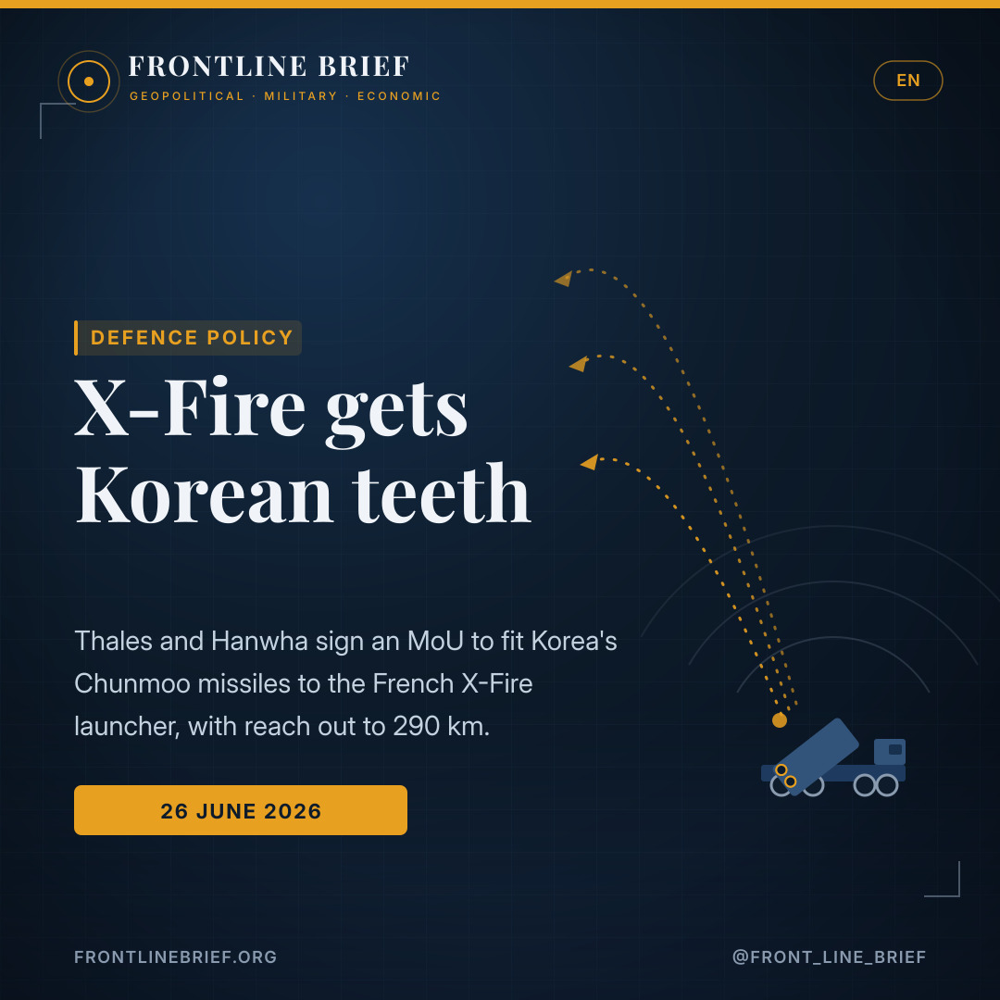
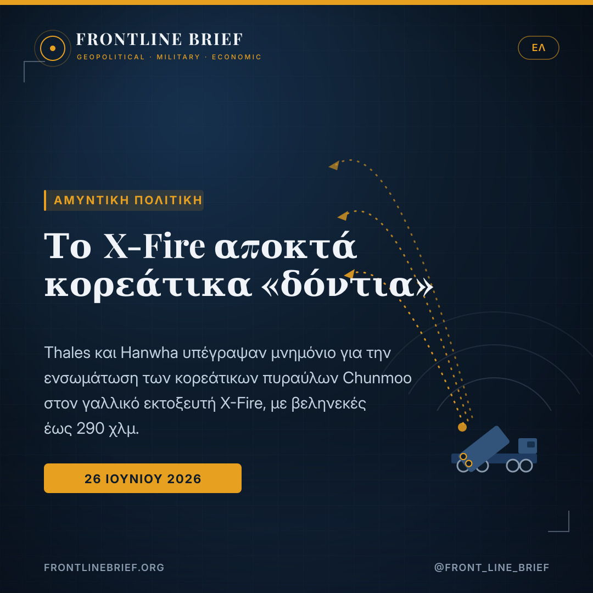
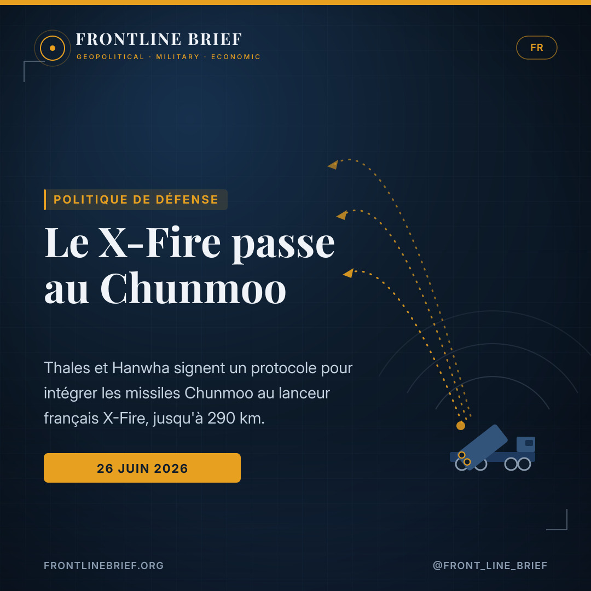
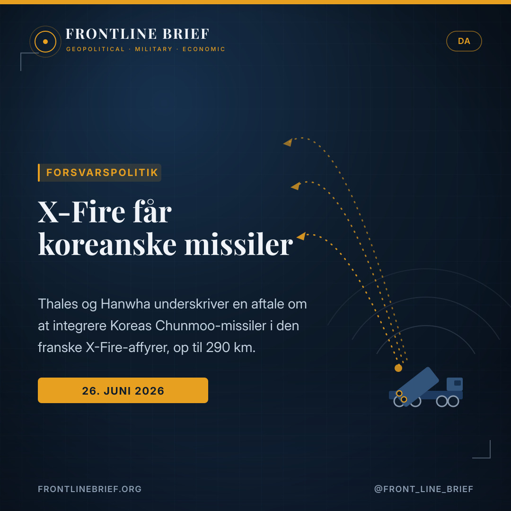
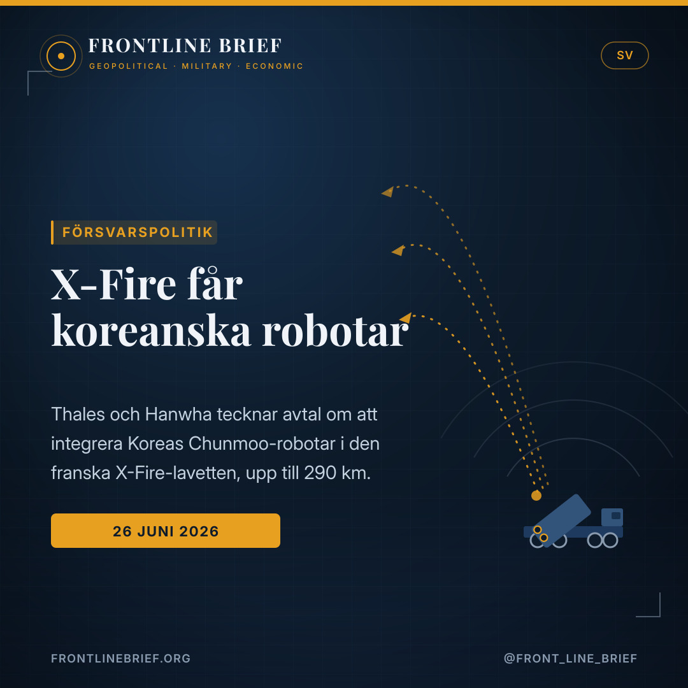

X-Fire gets Korean teeth: Thales and Hanwha line up Chunmoo missiles for the French launcher
Thales and Hanwha have signed a memorandum to fit South Korea's combat-proven Chunmoo missiles to the French X-Fire rocket launcher, reaching out to 290 kilometres. It is a shortcut to deep-strike mass for Europe — and a second life for an X-Fire that Paris itself passed over.





Three missiles, one launcher
The MoU explores integrating three Chunmoo munitions with X-Fire: the CGR080 guided rocket (80 km), the CTM-MR missile (160 km) and the CTM290 tactical ballistic missile (290 km).
A modular French MRL
Thales's X-Fire, developed with Soframe on a Daimler Zetros truck, is a modular launcher built for mobility and rapid deployment. It made its first demonstration firings on 20 May.
After Thundart
At Eurosatory 2026, France chose MBDA's Thundart, not X-Fire. Pairing with Chunmoo gives X-Fire a faster route to a credible long-range punch — and an export pitch beyond France.
A Franco-Korean handshake
Hanwha Aerospace and Thales have signed a memorandum of understanding to explore mating South Korea's Chunmoo guided missiles with the French X-Fire multiple rocket launcher. The two firms will work to integrate three Chunmoo munitions with the launcher: the CGR080 guided rocket, with a range of 80 kilometres; the CTM-MR missile, reaching 160 kilometres; and the CTM290 tactical ballistic missile, which strikes out to 290 kilometres.
What X-Fire is
X-Fire is Thales's modular rocket launcher, designed to take multiple types of munition and pitched squarely at Europe's drive to rebuild deep-strike firepower. Developed jointly with Soframe and mounted on a Daimler Truck Zetros chassis, it is built for high mobility and rapid deployment, and Thales has positioned it as a potential replacement for France's ageing LRU system. It carried out its first demonstration firings on 20 May.
Why pair with Chunmoo
The attraction is speed. Bolting on a combat-proven missile family lets X-Fire field a credible long-range strike capability far faster than developing a new family of rockets from scratch. The Chunmoo, South Korea's home-grown K239 system, has already won serious traction in Europe, with Poland, Estonia and Norway among its buyers — so the munitions come with a production base and a track record attached.
Bolting a proven Korean missile family onto a European launcher is a shortcut to deep-strike mass — and a hedge after Paris looked elsewhere.
The Eurosatory twist
The timing is pointed. At Eurosatory 2026, Paris announced that it had selected MBDA's home-grown Thundart system for its own multiple-launch rocket needs, and that negotiations were already under way — leaving X-Fire without its anchor domestic customer. The Hanwha tie-up reads, in part, as a response: a way to give X-Fire a compelling capability and an export story even after France looked elsewhere.
What each side gains
For Thales, Chunmoo brings ready-made long-range reach to a launcher that needed a credible payload. For Hanwha, fitting its missiles to a European-built launcher widens the door to future programmes, offering customers an alternative to a full Korean launcher-and-missile package and expanding the market for Chunmoo rounds. As Hanwha's European business chief Kyoung-hoon Kang framed it, the memorandum is a starting point for combining the company's missiles with Thales's launcher platforms, with more European cooperation to follow.
Μια γαλλο-κορεάτικη χειραψία
Η Hanwha Aerospace και η Thales υπέγραψαν μνημόνιο συνεργασίας για τη διερεύνηση του συνδυασμού των κατευθυνόμενων πυραύλων Chunmoo της Νότιας Κορέας με τον γαλλικό πολλαπλό εκτοξευτή πυραύλων X-Fire. Οι δύο εταιρείες θα εργαστούν για την ενσωμάτωση τριών πυρομαχικών του Chunmoo στον εκτοξευτή: του κατευθυνόμενου πυραύλου CGR080, βεληνεκούς 80 χιλιομέτρων· του πυραύλου CTM-MR, που φτάνει τα 160 χιλιόμετρα· και του τακτικού βαλλιστικού πυραύλου CTM290, με βεληνεκές 290 χιλιομέτρων.
Τι είναι το X-Fire
Το X-Fire είναι ο αρθρωτός εκτοξευτής της Thales, σχεδιασμένος να φέρει πολλαπλούς τύπους πυρομαχικών και ευθυγραμμισμένος με την ευρωπαϊκή προσπάθεια ανασυγκρότησης των ικανοτήτων βαθιάς κρούσης. Αναπτύχθηκε από κοινού με τη Soframe και είναι τοποθετημένος στην πλατφόρμα Daimler Truck Zetros, φτιαγμένος για υψηλή κινητικότητα και ταχεία ανάπτυξη· η Thales τον έχει τοποθετήσει ως πιθανό αντικαταστάτη του παλαιού γαλλικού συστήματος LRU. Πραγματοποίησε τις πρώτες του δοκιμαστικές βολές στις 20 Μαΐου.
Γιατί ο συνδυασμός με το Chunmoo
Το ζητούμενο είναι η ταχύτητα. Η προσθήκη μιας δοκιμασμένης σε μάχη οικογένειας πυραύλων επιτρέπει στο X-Fire να αποκτήσει αξιόπιστη ικανότητα κρούσης μεγάλου βεληνεκούς πολύ γρηγορότερα από την ανάπτυξη μιας νέας οικογένειας από το μηδέν. Το Chunmoo, το εγχώριο νοτιοκορεάτικο σύστημα K239, έχει ήδη κερδίσει σημαντική απήχηση στην Ευρώπη, με την Πολωνία, την Εσθονία και τη Νορβηγία ανάμεσα στους πελάτες του — έτσι, τα πυρομαχικά συνοδεύονται από μια βιομηχανική βάση και ένα ιστορικό αξιοπιστίας.
Το να βιδώνεις μια δοκιμασμένη κορεάτικη οικογένεια πυραύλων σε έναν ευρωπαϊκό εκτοξευτή είναι μια συντόμευση προς τη μαζική βαθιά κρούση — και ένα αντιστάθμισμα αφότου το Παρίσι κοίταξε αλλού.
Η στροφή του Eurosatory
Ο χρονισμός είναι εύγλωττος. Στην έκθεση Eurosatory 2026, το Παρίσι ανακοίνωσε ότι επέλεξε το εγχώριο σύστημα Thundart της MBDA για τις δικές του ανάγκες πολλαπλής εκτόξευσης και ότι οι διαπραγματεύσεις είχαν ήδη ξεκινήσει — αφήνοντας το X-Fire χωρίς τον βασικό εγχώριο πελάτη του. Η συμφωνία με τη Hanwha διαβάζεται, εν μέρει, ως απάντηση: ένας τρόπος να αποκτήσει το X-Fire μια πειστική δυνατότητα και μια εξαγωγική προοπτική, ακόμη κι αφότου η Γαλλία στράφηκε αλλού.
Τι κερδίζει η κάθε πλευρά
Για τη Thales, το Chunmoo προσφέρει έτοιμο βεληνεκές μεγάλης απόστασης σε έναν εκτοξευτή που χρειαζόταν αξιόπιστο φορτίο. Για τη Hanwha, η προσαρμογή των πυραύλων της σε έναν εκτοξευτή ευρωπαϊκής κατασκευής διευρύνει την πρόσβαση σε μελλοντικά προγράμματα, προσφέροντας στους πελάτες μια εναλλακτική στο πλήρες κορεάτικο πακέτο και διευρύνοντας την αγορά για τα πυρομαχικά Chunmoo. Όπως το έθεσε ο επικεφαλής της ευρωπαϊκής δραστηριότητας της Hanwha, Kyoung-hoon Kang, το μνημόνιο είναι ένα σημείο εκκίνησης για τον συνδυασμό των πυραύλων της εταιρείας με τις πλατφόρμες εκτόξευσης της Thales, με περισσότερη ευρωπαϊκή συνεργασία να ακολουθεί.
Une poignée de main franco-coréenne
Hanwha Aerospace et Thales ont signé un protocole d'accord pour étudier le mariage des missiles guidés Chunmoo sud-coréens avec le lance-roquettes multiple français X-Fire. Les deux groupes travailleront à intégrer trois munitions du Chunmoo au lanceur : la roquette guidée CGR080, d'une portée de 80 kilomètres ; le missile CTM-MR, qui atteint 160 kilomètres ; et le missile balistique tactique CTM290, qui frappe jusqu'à 290 kilomètres.
Ce qu'est le X-Fire
Le X-Fire est le lanceur modulaire de Thales, conçu pour emporter plusieurs types de munitions et clairement positionné dans l'effort européen de reconstitution des capacités de frappe dans la profondeur. Développé conjointement avec Soframe et monté sur un châssis Daimler Truck Zetros, il est pensé pour une grande mobilité et un déploiement rapide ; Thales l'a présenté comme un possible remplaçant du vieux système LRU français. Il a effectué ses premiers tirs de démonstration le 20 mai.
Pourquoi s'associer au Chunmoo
L'intérêt, c'est la rapidité. Greffer une famille de missiles éprouvée au combat permet au X-Fire de disposer d'une capacité de frappe à longue portée crédible bien plus vite que de développer une nouvelle famille de roquettes en partant de zéro. Le Chunmoo, le système coréen K239 de conception nationale, a déjà séduit en Europe — la Pologne, l'Estonie et la Norvège figurent parmi ses clients — si bien que les munitions arrivent avec une base industrielle et un historique éprouvé.
Greffer une famille de missiles coréenne éprouvée sur un lanceur européen, c'est un raccourci vers la masse de frappe dans la profondeur — et une assurance après que Paris a regardé ailleurs.
Le tournant d'Eurosatory
Le calendrier est éloquent. Lors d'Eurosatory 2026, Paris a annoncé avoir retenu le système national Thundart de MBDA pour ses propres besoins de lance-roquettes multiple, et que les négociations étaient déjà engagées — laissant le X-Fire sans client national d'ancrage. L'accord avec Hanwha se lit, en partie, comme une réponse : un moyen de donner au X-Fire une capacité convaincante et un récit à l'export, même après que la France s'est tournée ailleurs.
Ce que chacun y gagne
Pour Thales, le Chunmoo apporte une allonge prête à l'emploi à un lanceur qui manquait de charge crédible. Pour Hanwha, adapter ses missiles à un lanceur de fabrication européenne élargit l'accès aux programmes futurs, offrant aux clients une alternative au package coréen complet et élargissant le marché des munitions Chunmoo. Comme l'a résumé le responsable des activités européennes de Hanwha, Kyoung-hoon Kang, le protocole est un point de départ pour combiner les missiles du groupe avec les plateformes de lancement de Thales, d'autres coopérations européennes devant suivre.
Et fransk-koreansk håndtryk
Hanwha Aerospace og Thales har underskrevet en hensigtserklæring om at undersøge en sammenkobling af Sydkoreas styrede Chunmoo-missiler med den franske raketkaster X-Fire. De to firmaer vil arbejde på at integrere tre Chunmoo-ammunitioner i kasteren: den styrede raket CGR080 med en rækkevidde på 80 kilometer; missilet CTM-MR, der når 160 kilometer; og det taktiske ballistiske missil CTM290, der rammer ud til 290 kilometer.
Hvad X-Fire er
X-Fire er Thales' modulære raketkaster, designet til at bære flere typer ammunition og placeret midt i Europas bestræbelse på at genopbygge dybdeangrebsevner. Udviklet sammen med Soframe og monteret på et Daimler Truck Zetros-chassis er den bygget til høj mobilitet og hurtig indsættelse; Thales har positioneret den som en mulig afløser for Frankrigs aldrende LRU-system. Den gennemførte sine første demonstrationsskydninger 20. maj.
Hvorfor parre med Chunmoo
Det tiltrækkende er hastigheden. At montere en kampprøvet missilfamilie lader X-Fire stille med en troværdig langtrækkende slagkraft langt hurtigere end at udvikle en ny raketfamilie fra bunden. Chunmoo, Sydkoreas hjemmeudviklede K239-system, har allerede vundet seriøst fodfæste i Europa, med Polen, Estland og Norge blandt køberne — så ammunitionen kommer med en produktionsbase og en dokumenteret historik.
At bolte en kampprøvet koreansk missilfamilie på en europæisk kaster er en genvej til dybdeslagkraft i mængde — og en gardering, efter at Paris kiggede andetsteds.
Eurosatory-drejet
Tidspunktet er sigende. På Eurosatory 2026 meddelte Paris, at man havde valgt MBDA's hjemmeudviklede Thundart-system til sine egne raketkasterbehov, og at forhandlingerne allerede var i gang — hvilket lod X-Fire stå uden sin nationale ankerkunde. Aftalen med Hanwha læses delvist som et svar: en måde at give X-Fire en overbevisende kapacitet og en eksportfortælling, selv efter at Frankrig kiggede andetsteds.
Hvad hver side vinder
For Thales bringer Chunmoo en færdig langtrækkende rækkevidde til en kaster, der manglede en troværdig last. For Hanwha åbner det at tilpasse sine missiler til en europæisk-bygget kaster døren til fremtidige programmer, idet det giver kunder et alternativ til den fulde koreanske pakke og udvider markedet for Chunmoo-ammunition. Som chefen for Hanwhas europæiske forretning, Kyoung-hoon Kang, formulerede det, er erklæringen et udgangspunkt for at kombinere virksomhedens missiler med Thales' kasterplatforme, med mere europæisk samarbejde i vente.
En fransk-koreansk handskakning
Hanwha Aerospace och Thales har undertecknat en avsiktsförklaring om att utforska en koppling av Sydkoreas styrda Chunmoo-robotar till den franska raketlavetten X-Fire. De två företagen ska arbeta för att integrera tre Chunmoo-ammunitioner i lavetten: den styrda raketen CGR080 med en räckvidd på 80 kilometer; roboten CTM-MR, som når 160 kilometer; och den taktiska ballistiska roboten CTM290, som slår ut till 290 kilometer.
Vad X-Fire är
X-Fire är Thales modulära raketlavett, utformad för att bära flera typer av ammunition och placerad mitt i Europas strävan att återuppbygga förmågan till djupa slag. Utvecklad tillsammans med Soframe och monterad på ett Daimler Truck Zetros-chassi är den byggd för hög rörlighet och snabb insats; Thales har positionerat den som en möjlig ersättare för Frankrikes åldrande LRU-system. Den genomförde sina första demonstrationsskjutningar den 20 maj.
Varför para ihop med Chunmoo
Det lockande är snabbheten. Att montera på en stridsprövad robotfamilj låter X-Fire ställa upp med en trovärdig långräckviddig slagkraft långt snabbare än att utveckla en ny robotfamilj från grunden. Chunmoo, Sydkoreas egenutvecklade K239-system, har redan vunnit rejält fotfäste i Europa, med Polen, Estland och Norge bland köparna — så ammunitionen kommer med en produktionsbas och en dokumenterad historik.
Att bulta fast en stridsprövad koreansk robotfamilj på en europeisk lavett är en genväg till djup slagkraft i mängd — och en gardering efter att Paris tittade åt annat håll.
Eurosatory-vändningen
Tajmingen är talande. Vid Eurosatory 2026 meddelade Paris att man valt MBDA:s egenutvecklade Thundart-system för sina egna raketlavettbehov, och att förhandlingar redan inletts — vilket lämnade X-Fire utan sin nationella ankarkund. Avtalet med Hanwha läses delvis som ett svar: ett sätt att ge X-Fire en övertygande förmåga och en exportberättelse, även efter att Frankrike tittade åt annat håll.
Vad varje sida vinner
För Thales ger Chunmoo en färdig långräckviddig förmåga till en lavett som saknade en trovärdig last. För Hanwha öppnar anpassningen av robotarna till en europeiskbyggd lavett dörren till framtida program, genom att ge kunder ett alternativ till det fulla koreanska paketet och bredda marknaden för Chunmoo-ammunition. Som chefen för Hanwhas europeiska verksamhet, Kyoung-hoon Kang, uttryckte det, är avsiktsförklaringen en utgångspunkt för att kombinera företagets robotar med Thales lavettplattformar, med mer europeiskt samarbete att vänta.
Sources
- OnAlert.gr — X-Fire: Thales και Hanwha υπέγραψαν συμφωνία για ενσωμάτωση των νοτιοκορεάτικων πυραύλων (Ελισάβετ Σταύρου, 26 June 2026)
- Thales Group — press release on the Thales–Hanwha long-range precision strike MoU
- Frontline Brief background — France's Thundart selection at Eurosatory 2026 and the Chunmoo K239 in Europe